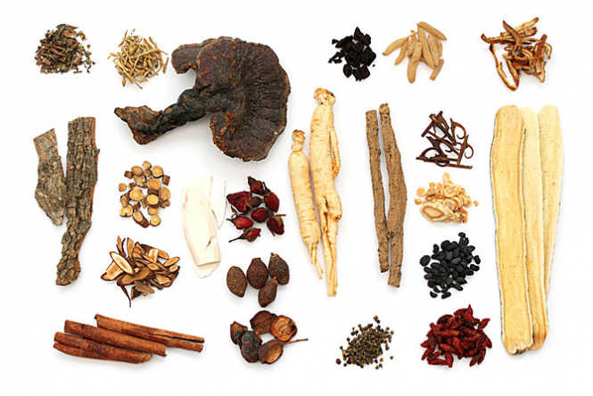
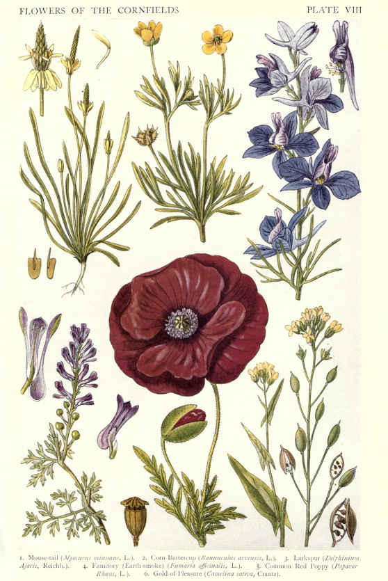
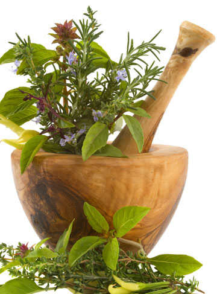
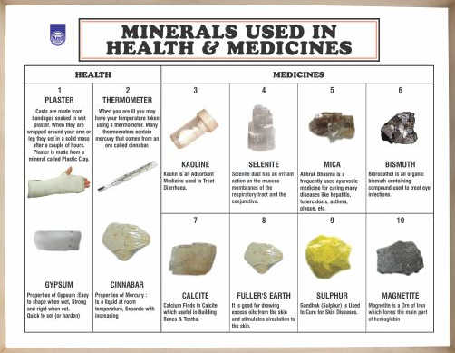

Welcome to this little sample page
Exercising some HTML, CSS, and JQuery to make some tabbed panes.
This is a little implementation for Project: Manipulating the DOM with jQuery from
The Odin Project.
What's interesting is that I actually am a medicinal maven. Specifically, I'm a licensed herbalist.

Some of the herbs pictured: Astragulus, Cinnamon, Licorice, Ginseng, ...
Medicinal Flowers
Generally speaking, flowers taken as herb tea have certain common actions: they tend to effect
the upper and outer parts of the body, and they tend to effect moods.

Roots
In many places on the planet the word roots is synonymous with medicine.

Barks
You get the idea...
Minerals
The herbology practices by ancient Chinese, Indian, and African cultures incorporated all sorts of
natural substances besides just plant parts. For example, everything from salt to ... was used for
treating everything from the common cold, to heavy problems and especially cosmetic uses!

Contact Us